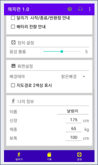
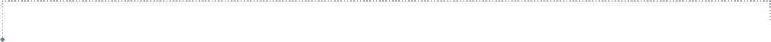

Team Project
Happy Run 모바일 앱 UI/UX 리디자인
FLEX해조 김평우 안소영 이수빈 정희경
2023.05.03 - 05.31
OVERVIEW
해피런이라는 달리기 기록 어플의 불편한 점을 찾고
다른 러닝 어플과 비교 분석하며 보완한 UI/UX 리디자인 프로젝트
선정 배경
진입 장벽이 낮은 야외 운동 - 달리기
운동의 시작이 어려운 사람들에게 낮은 진입장벽의 이점으로
육체적 정신적 건강관리를 도모 하고자 선정해보았다.
담당 업무 전체적 구성 디자인 작업 및 취합
사용 기술 Figma / Adobe Photoshop
기존 해피런 UI / UX

작은 텍스트와 아이콘
텍스트의 나열로
한 눈에 들어오지 않는 레이아웃
가독성이 떨어지는 색상
전체적으로
포인트컬러가 없는 단조로움

경쟁 어플 특징과 리뷰 분석
나이키 런클럽
직관적인 UI·UX
사용이 편리한 인터페이스
런데이
입문자도 쉽게 할 수 있는
동기부여와 재미요소
Steps App
색상의 높은 가시성과
단순한 기능
쉬운 장치 설정 기능
음성 안내 등 기능 설정에 관한 리뷰가 반복적으로 나오는 것으로 보아 많이
쓰는 화면에 쉬운 설정 기능이 필요.
정보전달의 확실성 필요
운동 어플의 특이점은 운동 중 화면을 보지 않는다는 점으로 짧은 시간 안에
필요한 정보를 전달할 수 있는 간결함과 직관성, 높은 가시성, 페이지 연결의
단순하고 쉬운 구성 필요.
SWOT 분석과 개선방향
Strength
간결한 기능.
필수 요소만 있는 쉬운 구성
Weakness
비효율적인 레이아웃으로 사용의 불편함.
가독성이 떨어지는 색상
Opportunity
초보자들을 가볍게 운동을 입문 시킬 수 있음.
마스크 착용 의무 해제로 운동 환경이 이전보다 조성.
Threat
기존에 사용자들 사이에서 이미 유명하고
전문성을 갖춘 나이키, 런데이 등 어플이 많이 있음.
As is
작은 텍스트와 아이콘
텍스트와 아이콘이 작아서 사용자가
기능을 쉽게 확인하기 어려움
직관적이지 않은 레이아웃
버튼 사용의 불편함
주요 기능들이 한 눈에 들어오지 않음
기록체크의 불편함
운동 기록과 상태 체크가 텍스트 한줄로
구성되어 내용 확인이 어려움
사용자를 고려하지 않은 색의 사용
배경색과 글자색이 비슷하여 보기 불편함
디자인적인 색상이 없음
To be
텍스트와 아이콘 크기 조절
텍스트와 아이콘의 크기를 조절하여
사용자가 쉽게 확인할 수 있게 한다.
레이아웃 수정
운동 중에도 사용이 쉽도록 직관적인 배치와
화면구성, 주요 기능과 부가적 기능의 분리.
기록화면 재구성
기록 변화를 쉽게 비교할 수 있도록
편의성을 주는 시각적 요소의 사용
전체 컬러 재설정
가독성 좋은 색의 사용 및 포인트 컬러 추가
UX Vision
직관적인 디자인
편리한 사용과 기록 기능에 집중함
운동시작
시작/정지
일시정지
화면잠금
음성안내